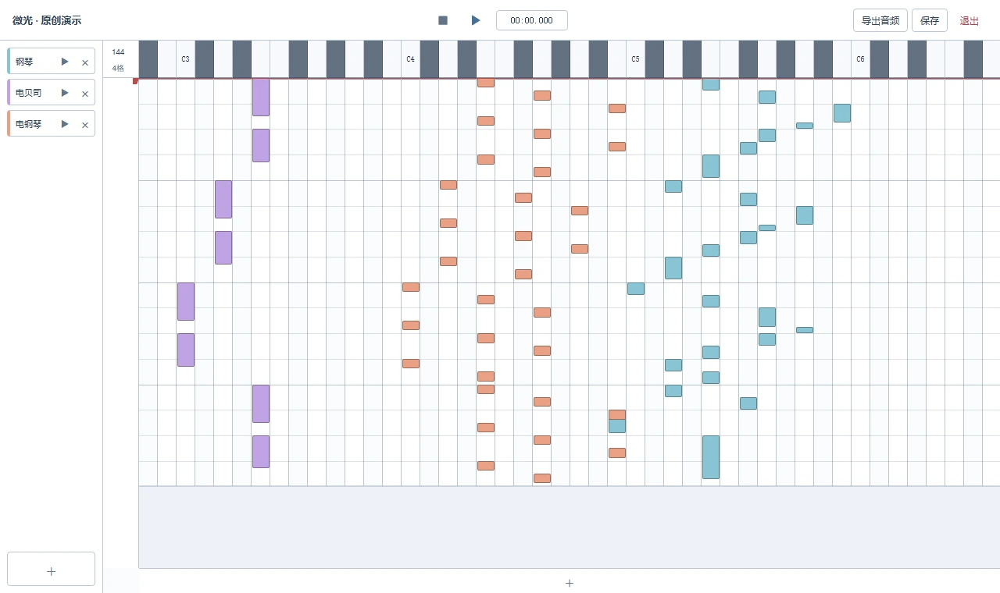

挑一种你喜欢的声音
打开音色库，点一下试听。
先从喜欢的声音开始。
独立开发中的音乐编辑器

01 / 先让耳朵做决定
不用先理解一堆参数。
点一下，听听换一种声音会怎样。
02 / 从第一颗音符开始
打开音色库，点一下试听。
先从喜欢的声音开始。
点击添加音符，拖动改变位置。
长一点、短一点，都可以试。
播放中也能调整，听见变化。
满意之后，保存工程或导出音频。
还有一点，你可能想知道
可以从试听声音、添加几个音符、反复听和调整开始。界面尽量减少学习负担，但创作出满意的音乐，仍然需要尝试和练习。
可以。在乐曲库里点击文件夹图标，选择 .mid 或 .midi 文件。它会变成可以编辑的音符。MIDI 本身不包含录音，听感会受使用的音色影响；踏板、弯音等控制信息目前尚未完整导入。
下载完成后，当前的音符编辑、内置音色播放、工程保存和音频导出都在本地进行，不需要注册账号。
内置音色采用 S. Christian Collins 的 GeneralUser GS 2.0.3，播放使用 SpessaSynth 内核。音源许可允许商用和软件打包，但作者说明部分历史采样无法完全追溯原始来源。完整许可随软件附带，也可查看原始许可与来源说明 ↗。本站「微光」是为演示制作的原创片段，未使用第三方歌曲录音。
这是一个还在生长的项目。
你在哪一步卡住了？你希望听见什么？